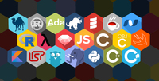
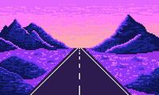

Debugando Ideias

O Debugando Ideias é um espaço dedicado a compartilhar dicas rápidas de programação e soluções práticas para erros comuns que surgem no dia a dia de quem está aprendendo a codar. A ideia é transformar cada bug ou dúvida em aprendizado, trazendo tutoriais curtos, anotações de estudo e snippets úteis em Git, JavaScript, Python e outras linguagens que forem entrando na jornada.
Acesse este canal
Pixel Verso

O Pixel Verso é um portal geek pensado para reunir em um só lugar o universo dos games, animes e cultura nerd. Aqui cabem reviews, listas de recomendações, curiosidades e novidades sobre esse mundo, sempre com uma pegada descontraída e apaixonada, feita para quem gosta de explorar cada detalhe dos universos fictícios e da tecnologia por trás do entretenimento.
Acesse este canal